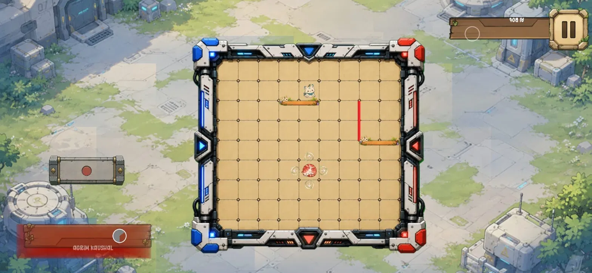
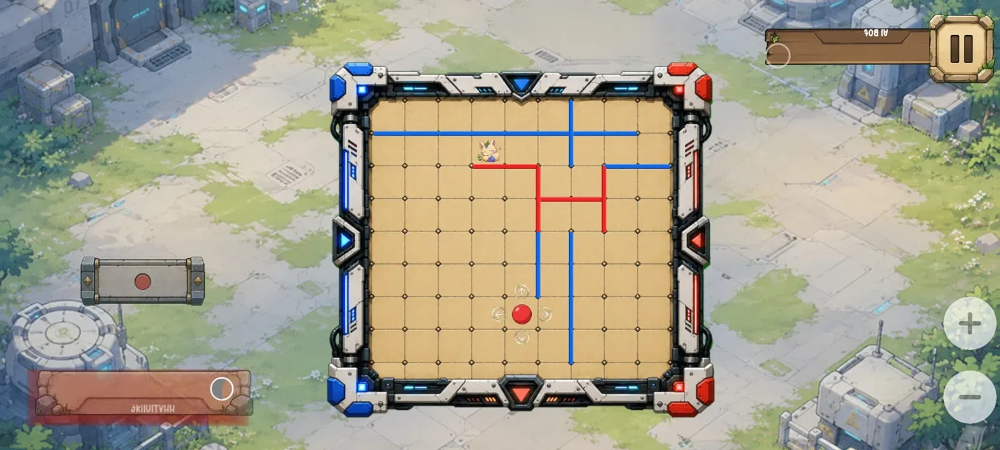
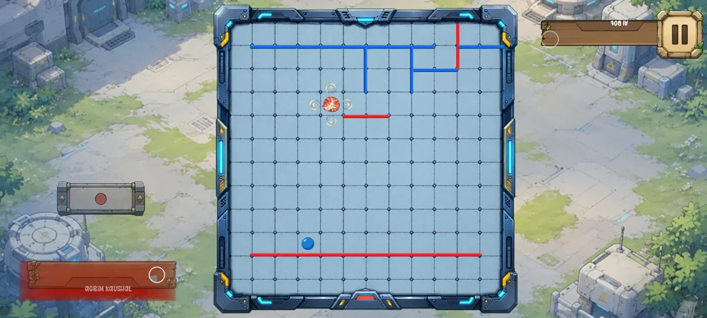
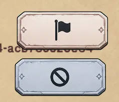
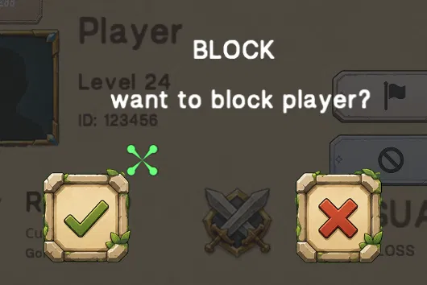
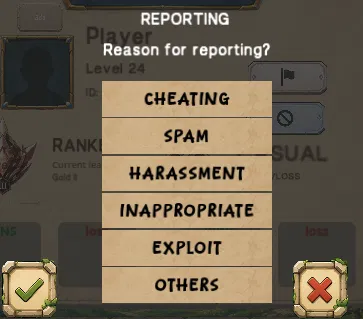

THE MATCH
Simple board. Serious interaction.
The supplied gameplay screens show the compact board, the red and blue wall paths, opponent/player UI, and the in-match controls that frame a mobile competitive session.
A multiplayer / competitive mobile game built around tactical board play, player accounts, social interaction, moderation, and the blue-versus-red clarity of the match itself.

The supplied gameplay screens show the compact board, the red and blue wall paths, opponent/player UI, and the in-match controls that frame a mobile competitive session.

WallFall includes player IDs, profiles, friends, account types, reporting, blocking, notifications, and account deletion flows.
Real supplied game captures are used throughout the site rather than stock placeholders.

When an opponent's ID is selected in a ranked or friendly match, these player actions are presented before the confirmation/report flows.



The current interface separates the two actions clearly: report player and block player. Blocking has a confirmation step, while reporting exposes specific categories shown in the provided UI: cheating, spam, harassment, inappropriate, exploit, and other.
WallFall supports guest accounts and account linking through the game's account/settings experience. The supplied settings screen shows account information, player/device identifiers, login options, and the destructive account deletion control.
The current service stack includes Nakama, Google Play Games Services, Firebase / Firebase Cloud Messaging, and AdMob.

Guest account state, account linking, logout, and account deletion are surfaced from the settings experience.
A competitive mobile game in development. Public launch details, store links, and official support contacts will be added when confirmed.